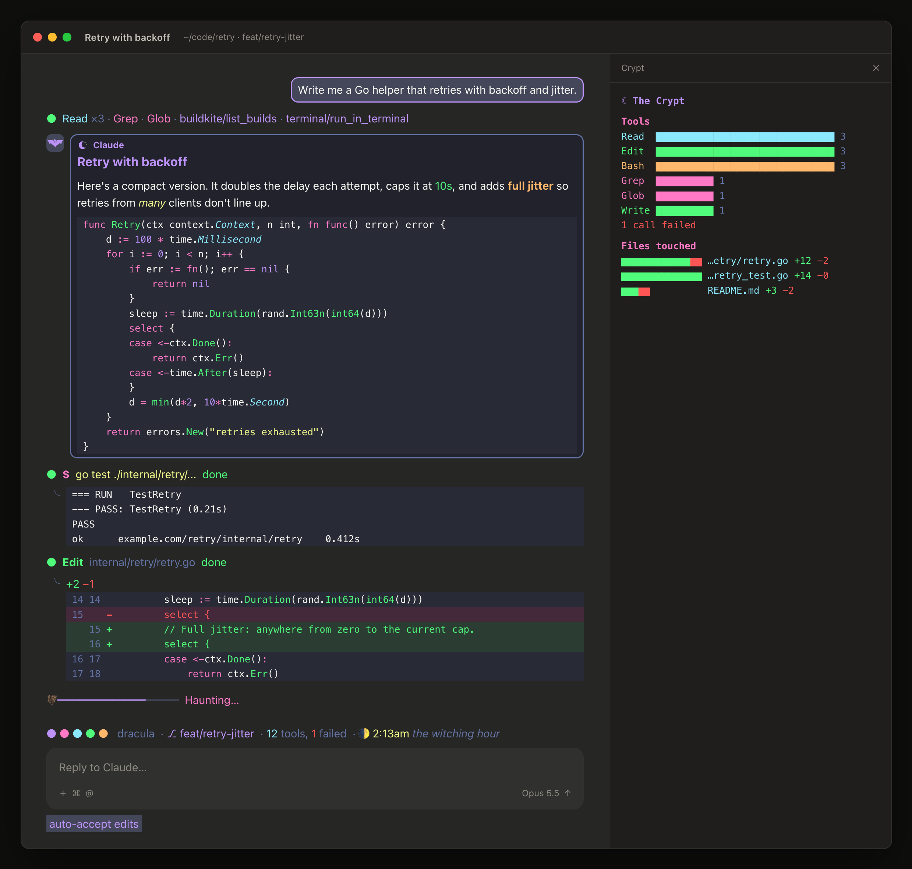
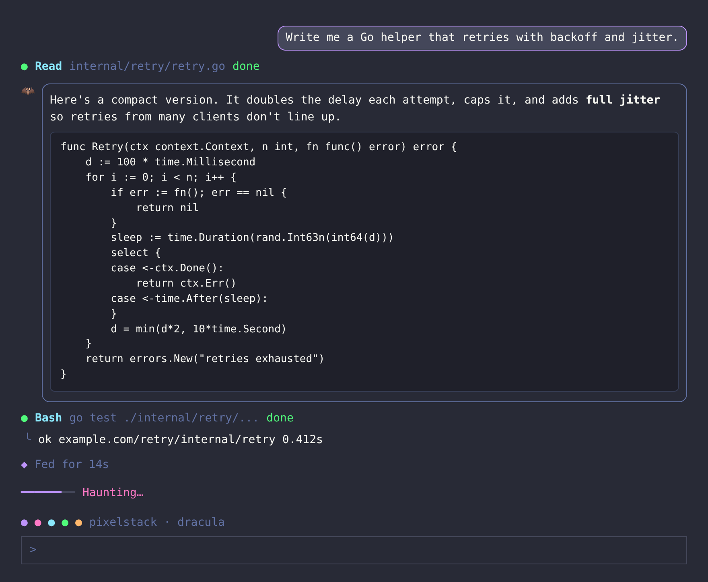

Fix the flaky test.
Prompt bubbles
Your prompt sits right-aligned on the current-line color with a rounded accent border.
terminaldesktopvscode
claude-dracula redraws your Claude conversation in the Dracula palette: purple, pink, cyan and green on a dark indigo-gray. Your prompts turn into bubbles, replies get a bat, and the working line says Lurking… Haunting… Conjuring…
claude plugin install pixelstack --marketplace rossedman/claude-dracula
claude-dracula hooks the conversation's render points and redraws each one in Dracula. Nothing about how Claude works changes, only how the conversation looks.
Your prompt sits right-aligned on the current-line color with a rounded accent border.
Claude's replies get a bat (or a spark, with spooky off) and a rounded comment-colored card.
A status dot (orange running, green done, red error, gray stopped), the tool in cyan, its first argument in comment gray.
The usual result, hung from a gutter mark that turns red when something breaks.
A segmented progress line fills as the turn moves from thinking to tools to answering, under a pink spooky word.
An accent diamond and how long Claude fed: Fed, Lurked, Haunted, Brooded, Feasted.
An optional organ chord when a turn finishes. Synthesized for this project. /pixelstack sound on
The palette's dots above the prompt, led by your accent, so you always know the coffin is open.
Everything lives under /pixelstack. Settings persist across sessions, so pick an accent once and it sticks.
Accents take any of the five presets or your own hex color. Spooky mode is on by default; the sound is off until you ask for it.
# turn the theme on or off /pixelstack on /pixelstack off # swap the accent: purple · pink · cyan · green · orange · #hex /pixelstack accent pink /pixelstack accent #FF5555 # bat avatar and vampire words (on by default) /pixelstack spooky off # organ sting when a turn finishes (macOS, off by default) /pixelstack sound on # what's on right now /pixelstack status
Every color comes from the Dracula spec, so the mod sits right at home in a Dracula terminal or editor. Click a swatch to copy its hex.
One mod, every surface Claude Code draws on. The screenshots below come from the exact trees the mod renders.
The full set, including the turn footer. Pair it with Dracula for your terminal for the whole look.
Vector bat and spark avatars, bubbles, cards, tool rows and the palette band.
Prompts, replies, tool calls, results and the working line, right inside your editor.


A vampire can't enter unless invited. Thirty seconds, three ways.
/plugin install pixelstack --marketplace rossedman/claude-dracula/pixelstack accent pink.claude plugin install pixelstack --marketplace rossedman/claude-dracularossedman/claude-draculapixelstack.No. The mod colors its own elements: bubbles, cards, tool rows, the working line. For the full look, pair it with Dracula for your terminal.
Anytime. /pixelstack off turns the theme off, and expanded views (ctrl+o) always show the full default rows.
/pixelstack spooky off swaps the bat for a four-point spark and puts the usual working words back.
The Claude mobile app runs the mod's commands, but it doesn't currently show the restyled rows. The organ sting plays on macOS only.
claude plugin install pixelstack --marketplace rossedman/claude-dracula